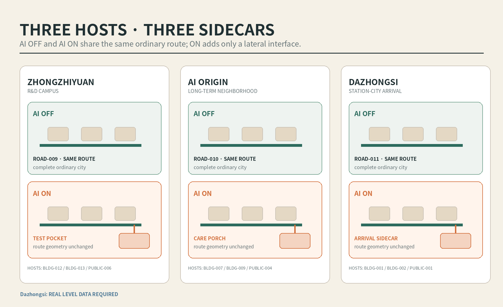
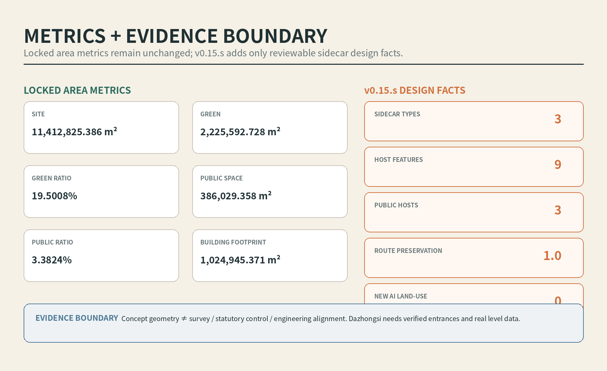

ROAD-009
TEST POCKET
ZHONGZHIYUAN | R&D CAMPUS
BLDG-012 · BLDG-013 · PUBLIC-006AI OFF · SAME ROUTEAI ON · + SIDECAR
The ordinary city is the host. AI is only a reversible sidecar.
AI OFF is a complete city; AI ON adds only stoppable test, care and arrival interfaces beside the same city.


ZHONGZHIYUAN | R&D CAMPUS
BLDG-012 · BLDG-013 · PUBLIC-006AI ORIGIN | LONG-TERM NEIGHBORHOOD
BLDG-007 · BLDG-009 · PUBLIC-004DAZHONGSI | STATION-CITY ARRIVAL
BLDG-001 · BLDG-002 · PUBLIC-001


总览地图 · 三层范围 · 重点区域 · 用地分区 · 交通慢行 · 蓝绿公共空间 · 建筑 · 更新项目 · AI 场景 · 核心指标 · 任务覆盖 · 自检状态 · 来源 · 假设
Three-level scope, buildings, renewal projects and AI scenarios remain closed through proposal, geometry and evidence matrices; this first screen focuses on the host + sidecar spatial judgment.